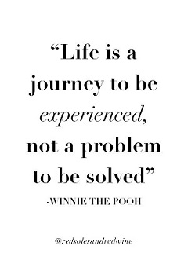
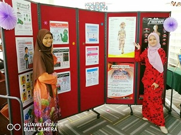
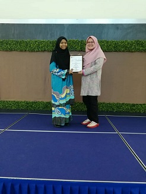
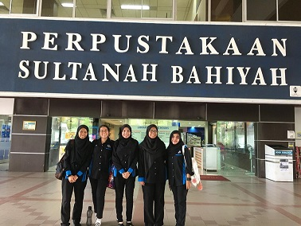
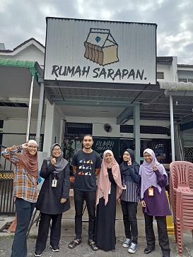

Experience



Practical Training
My first experience is during my practical training. It was a great experience that I never forget.
There I get more knowledge in library field. This training also teaches me be responsible with the task given. I had my practical training at Tun Dr. Ismail Library.
This library are big but did not has many staff. Although there are not many staff, they still friendly and have a consideration towards me. They always ask whether I have problems on task given.
For me, it was memorable experience because it was difficult to get at other place.
During my training, I get more knowledge about library and how they run the library. The things that I learn at the university, I could practice it when I works. It was really best working experience
because what I studies I get to do it in real works. So, it was good experience that I will never forget and I cannot get again in other place.


Interview Session
The other experience that I have is when I get to make interview session with my friends as a requirement of my subject. It was a good
experience because I get to gain more knowledge about the place where we interview. There have 2 place that I get to make an interview which is at Perpustakaan Sultanah Bahiyah in Univertisity Utara Malaysia (UUM) for library
technology interview and at Rumah Sarapan for business interview. During the interviews, I get more knowledge about the subject interview and place that we go. I will never forget this experience because
it was my first time had interview with people and the journey to interview place is the best memory and experience that I will never forget.